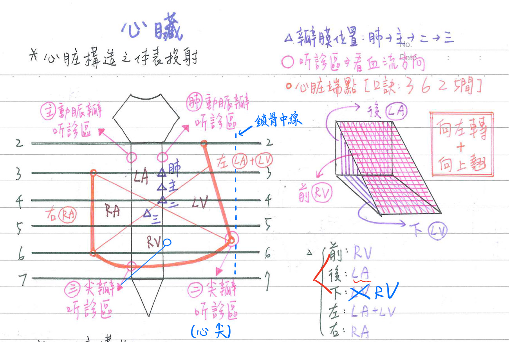
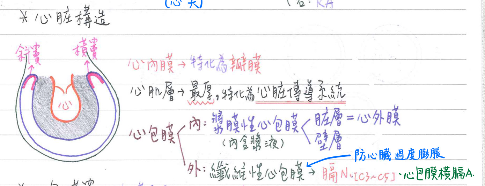
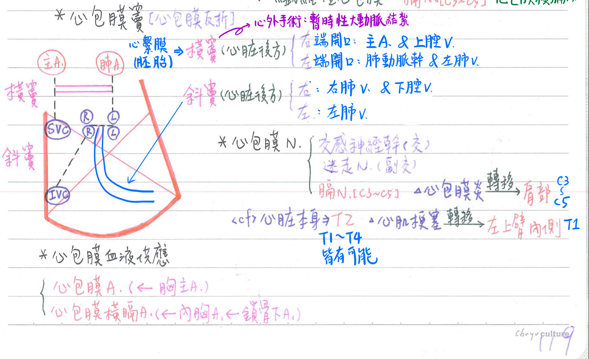
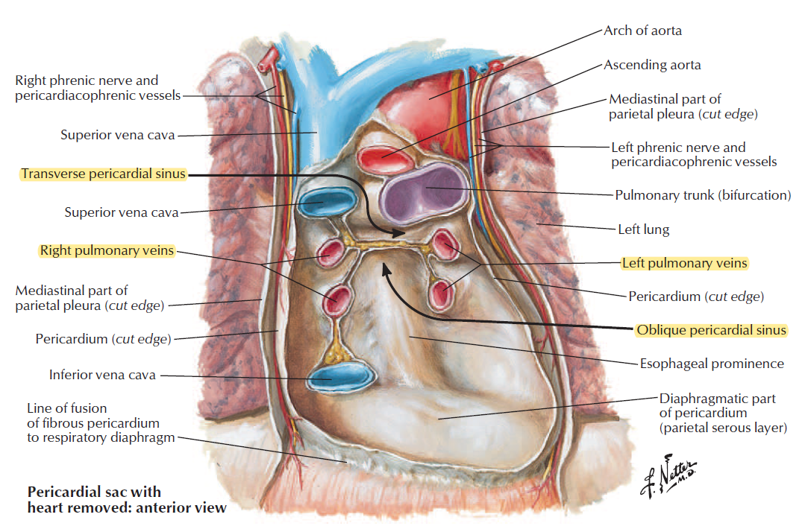
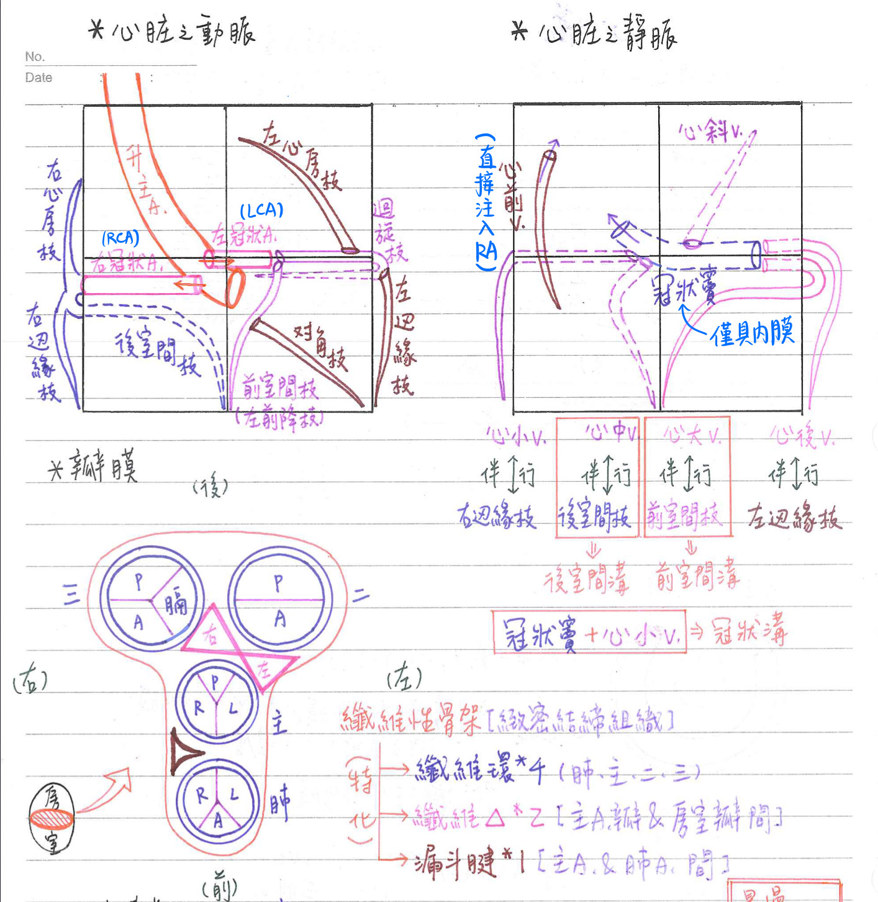
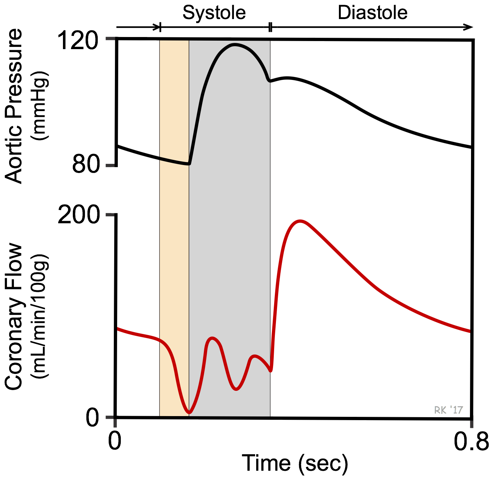
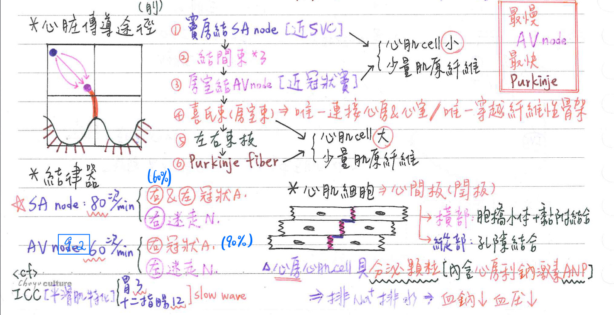

🫀 心血管系統-心臟
心臓之外觀
心臓之位置：胸腔之縱隔腔
- 胸腔(thoracic cavity)：
- 兩側→肋膜腔(pleuralcavity)：肺臟
- 中央→縱膈腔(mediastinum)：
- 上縱膈腔：胸腺、上腔靜脈、主動脈弓、氣管、食道等
- 下縱膈腔：
- 前：脂肪等結締組織
- 中：心臓、升主動脈、肺動脈幹
- 後：食道、胸主動脈、奇靜脈、胸管等
- 界線：
- 胸腔上界：R1
- 胸腔下界：橫膈膜
- [重點]上、下縱腔界線：胸骨角~T4下緣之交界線
心臟之表面(surfaces of the heart)：5個(向左轉+向上翹)
- 前表面(anterior)=胸肋面(sternocostal)：朝前方
→主含右心室；亦包括少部份右心房、左心室 - 下表面(inferior)=橫面(diaphragmatic)：朝下方
→主含右心室；亦包括少部份右心室備註
勘誤：應該不是LV
The inferior border is made by the right ventricle
https://www.ncbi.nlm.nih.gov/pmc/articles/PMC1571338/ - 後表面(posterior)=心底(base)：朝後方
→主含左心房：亦包括少部份右心房、大靜脈(上、下腔靜脈&肺靜脈) - 右側面(lateral)=右肺面(pulmonary)：朝右側
→主含右心房 - 左側面(lateral)=左肺面(pulmonary)：朝左側
→主含左心室；亦包括少部份左心房
心尖、心底
- 心尖(apex)：
- ★[108-1]左鎖骨中線與第五肋間之交點：位於心之左前下方
- 主要由左心室構成
- 為觸診之最大心點(point of maximum impulse, PMI)
- 心底(base)：
- 心臟後表面
- 含左心房；亦包括少部份右心房、大靜脈(上、下腔靜脈&肺V)
心臓之表面：體表投射
- 端點：[hint：362 5間]
- 右上端點：右R3
- 右下端點：右R6
- 左上端點：左R2；[Gray：左第2肋間(R2~R3)]
- ★[108-1]左下端點(心尖)：左第5肋間(R5~R6)
- 邊緣：
- 右緣：右心房(RA)
- 左緣：左心房(LA)+左心室(LV)
- 下緣：右心室(RV)
- 上緣：由大血管根部

[重點]瓣膜之體表投射區
- 肺動脈瓣：胸骨左緣/第3肋骨
- 主動脈瓣：胸骨左緣/第3肋間(R3~R4)
- 二尖瓣：胸骨左緣/R4
- 三尖辦：胸骨中線/第4肋間(R4~R5)
[重點]★[110-2]瓣膜聽診區
- 二尖瓣：心尖(左鎖骨中線/第5肋間)
- 三尖瓣：胸骨右緣/第6肋間 [Gray：胸骨左緣/第5肋間]
- 主動脈瓣：胸骨右緣/第2肋間
- 肺動脈瓣：胸骨左緣/第2肋間
心臟之構造：3層
心内膜(endocardium)
- 與血管內膜相連
- 可特化為瓣膜，阻止血液逆流
心肌層(myocardium)
- 最厚之層，收縮產生血液流動之推力
- 可特化為心臓傳導系统，產生並傳導動作電位
心肌層(myocardium) [橫竇&斜竇之內容，依據考古 & netter進行魔改]
- 外層：纖维性心包膜(fibrous pericardium)
- 防心臟過度膨脹：其內有膈N、心包膜橫膈A通過
- 內層：漿膜性心包膜(serous pericardium)
- 壁層(parietal)：緊臨纖維性心包膜
- 臓層(visceral)=心外膜(epicardium)：緊臨心肌層
- 心包膜腔(pericardial cavity)：壁層&臟層漿膜性心包膜之間
- 內含心包膜液(pericardial fluid)/漿液(約5-30c.c)→減少摩擦
備註
5-30c.c：為100年國考題的正確選項
但說法很多種 - 心包膜穿刺術(pericardiocentesis)：
- 抽吸心包膜積液(pericardial cffusion)→緩解心包填塞(cardiac tamponade)
- 由★[108-1]胸骨劍突&左肋骨下緣之交接處，約與腹壁成30度夾角朝左肩方向下針
→以減少刺破肋膜腔造成氣胸(pneumothorax)之風險
- 內含心包膜液(pericardial fluid)/漿液(約5-30c.c)→減少摩擦
- 心包膜竇(pericardial sinus)：位於心後方之心包膜反折(reflection)
- 心包膜斜竇(oblique pericardial sinus)：肺V之間的空腔；呈盲囊狀(cul-de-sac)
- 左界：左肺V
- 右界：右肺V & 下腔V
- 心包膜横竇(transverse pericardial sinus)：分隔動脈&靜脈 [A前V後]
- 右端開口：主A(上) &上腔V(下)
- 左端開口：肺動脈幹(上) & 左肺V(下)
- 心外手術：暫時性大動脈結紮處
- 心包膜斜竇(oblique pericardial sinus)：肺V之間的空腔；呈盲囊狀(cul-de-sac)


橫竇&斜竇的netter圖

心-神經支配 [複習皮節請點下方傳送門]
- ★[110-1]心包膜的神經支配：膈N(C3~5)、交感神經、迷走N(副交感)
- 纖維性心包膜、壁層漿膜性心包膜：膈N(C3~5)為主
- 心包膜炎之疼痛可轉移至肩部(C3-C5)
- 心內膜、心肌層、臟層漿膜性心包膜：心神經叢(cardiac plexus)為主
- 交感神經：心N(cardiac n)
- 節前=T1~T4；節後=上頸、中頸、下頸、胸神經節
- 副交感神經：迷走N
- 感覺：可經交感神經(eg.疼痛) & 副交感神經(eg. 血壓)路徑傳回
- ★[106-1]心絞痛、心肌梗塞之疼痛：可轉移至左臂內側(皮節T1)；T1~T4皮節皆可能有
備註
依據netter是T1，不是T2(趙神寫的)。
但其實T1~T4都有可能
- ★[106-1]心絞痛、心肌梗塞之疼痛：可轉移至左臂內側(皮節T1)；T1~T4皮節皆可能有
- 交感神經：心N(cardiac n)
心-血液供應
- ★[108-2]心內膜(&心臟瓣膜)、心肌層、臟層漿膜性心包膜(心外膜)：冠狀動脈系統
- 壁層漿膜性心包膜、纖維性心包膜：
- 心包膜A←胸主A
- 心包膜橫膈A←內胸A
心臟的腔室
- [重點]心房、心室平均壓力：
- 右心房：平均3mmHg
- 左心房：平均8mmHg
- 右心室：平均25/4mmHg
- 左心室：平均120/9mmHg
有一堆國中常識我就隱藏在這了
- 右心處理缺氧血
- 右心房接受：
- 上腔靜脈(引流橫膈膜以上之靜脈血)
b.下腔靜脈(引流橫膜以下之靜脈血)
C.冠狀竇(引流心臟本身之靜脈血)等血液回流
2.右心房(RA)之血液經三尖瓣注入右心室(RV)
3.右心室(RV)之血液經肺動脈瓣(半月瓣)射入肺動脈幹
- 左心處理充氧血
1.左心房接受:
a.2條右肺靜脈(引流右肺之靜血)
b.2條左肺靜脈(引流左肺之靜脈血)等血液回流
2.左心房(LA)之血液經二尖瓣(僧帽辦)注入左心室(LV)
3.左心室(LV)之血液經主動脈瓣(半月瓣)射入升主動脈
- 心臟內壓：
- 左心室最大(0~120mmHg)
- 右心房最小(0~3mmHg)
心房(atrium)：以終崎(terminal crest)為界，區分為
- 心耳(auricle)：內襯梳狀肌(pectinate muscle)
- 源自固有心房(atrum proper)
- 主腔：內襯平滑
- 右心房平滑部：源自腔靜脈竇(sinus of venae cavae)
- 左心房平滑部：源自原始肺靜脈之崁入
- 心房中膈：位左右心房間
- 胚胎期之次級中膈具卵圓孔(oval foramen)
→出生後由卵圓孔瓣膜(初級中膈)將其封閉，形成卵圆窩(凹陷主要在右側)
- 胚胎期之次級中膈具卵圓孔(oval foramen)
心室(ventricle)
- 內側具嵴狀心肉柱(trabeculae carneae)，可特化為：
- 乳頭肌(papillary muscle)：左2右3
- 調節帶(modertor band=中膈壁小樑=膈緣小樑(septomarginal trabecula) :
- 位於右心室，連接心室中膈與前壁乳頭肌
- 內含RBB(希氏束之右束枝)
- 胚胎期之心泡(bulbus cordis)：連結心室與動脈幹
- 右側衍生為通往肺動脈幹之動脈錐(conus arteriosus)=漏斗(infundibulum)
- 左側衍生為通往主動脈之主動脈前庭(aortic vestibule)
- 心室中膈：左右心室間，包括肌肉部及膜部
心臓的纖維性骨架(fibrous skeleton)
- 由緻密結締组織構成，位於心房與心室的交界面
- 功能：
- 固定瓣膜及心房、心室肌肉
- 分隔心房、心室之心肌細胞間的機械連結(不讓動作電位訊號相互干擾)
- 特化結構：
- 4個纖維環(ring)：主動脈瓣環、肺動脈瓣環、二尖瓣環、三尖瓣環
- 2個纖維三角(trigone)：左、右纖維三角；主動脈、房室瓣之間
- 1個漏斗腱(tendon of infundibulum)=動脈圓錐腱：主動脈、肺動脈之間
心臓重量(weight)：約250~300gm
心臟的血液供應
心臓之血液供應
- 左冠狀動脈：源自升主動脈之左主動脈辦管(aortic valve sinus)
※主動脈瓣竇：半月瓣上方之主動脈壁之局部膨大- 前室間枝(ant. intervetricular)=左前降枝(LAD)→對角枝(diagonal)
→供應：LV(前壁)、RV(前壁)、心室中膈(前方)、房室束分枝 - 迴旋枝(circumflex)→左心房枝(atrial)、左邊緣枝(marginal)
→供應：LA、LV(側壁)、心房中膈[竇房結(40%)、房室結(10%)、房室束(10%)]
- 前室間枝(ant. intervetricular)=左前降枝(LAD)→對角枝(diagonal)
- 右冠狀動脈：源自升主動脈之右主動脈瓣竇
- 後室間枝(post. interventricular)：LV(後壁)、RV(後壁)、心室中膈(後方)
- 右邊緣枝(marginal)：RV(側壁)
- 心房枝(atrial)：RA
- 竇房結枝(br. to SA node)：竇房結(60%)
- 房室結枝(br. to AV node)：房室結(90%)、房室束(90%)
心包膜之血液供應
- 心包膜A←胸主A
- 心包膜横膈A←內胸A←鎖骨下A
心臟之靜脈
- 以下5條★[110-1]先注入冠狀竇(coronary sinus)，再注入右心房(RA)[不經過上腔V]
- 冠狀竇：僅具內皮細胞，不像一般靜脈具3層結構
- 心大靜脈(great cardiac)=前室間靜脈(ant. interventricular)
→和LCA的前室間支伴行 - 心中靜脈(middle cardiac)=後前室間靜脈(post. interventricular)
→和RCA的後室間支伴行 - 心小靜脈(small cardiac)：和RCA的右邊緣支伴行
- 心後靜脈(posterior cardiac)：和LCA迴旋支的左邊緣枝伴行
- 心斜靜脈(oblique v of LA)
- 心前靜脈(anterior cardiac v=anterior v. of RV)：3~4條，引流RV前壁
→直接注入右心房(RA) - 心最小静脈(venae cordis minimae = v. of Thebesius)：多條
→直接注入各腔室(數量：RA>RV>LA>LV)

心溝(cardiac sulcus)
- 前室間溝：LCA前室間枝、心大靜脈
- 後室間溝：RCA後室間枝、心中靜脈
- 冠狀溝(心房、心室之間)：冠狀竇、心小靜脈
心臟-瓣膜(心內膜的特化)
- 瓣膜之功能：防止血液逆流
- 房室瓣：防止血液由心室逆流回心房
- 半月瓣：防止血液由大動脈逆流回心室
房室瓣(atrioventricular valve)=尖瓣(cuspid valve)
- 左房室瓣=二尖瓣(bicusidvale)= 僧帽瓣(mitral valve)：後瓣、前辦
- 右房室瓣 = 三尖瓣(tricuspid valve)：後瓣、前辦、膈辦(septal)
- 具腱索(chordae tendineae)、乳頭肌(papillary muscle)：防止尖瓣外翻
- [重點]開口(orifice)面積：約5±1 (4~6)cm
- 房室瓣狹窄(stenosis)：輕度<2.5；中度1~2.5；重度<1 cm2
半月瓣(semilunar valve)
- 無腱索、乳頭肌
- 左半月瓣=主動脈瓣(aortic valve，3片)：左、右、後
- 右半月瓣=肺動脈瓣(pulmonary valve，3片)：左、右、前
- [重點]開口(orifice)面積：約3±0.5(2.5~3.5)cm
- 半月瓣狹窄(stenosis)：輕度<1；中度 0.5~1；重度<0.5 cm2
心動周期與心音
- 心動周期(cardiac cycle)：0.8 秒/次
- 心房收縮：0.1秒；心房舒張：0.7秒
- 心室收缩：0.3秒；心室舒張：0.5秒
- 心週期(sec/次)=60(sec/min)/心率(次/min)
心動周期：5期
- 心房收缩(心室 慢速/主動 充填)：心房1/3的血流入心室
- 心室等長(等容、等體積)收縮：心室急遽加壓
- 心室射出期：心室將部份血(約55%)射入大動脈
- 心室等長(等容、等體積)舒張：心室急遽減壓
- 心室快速被動充填期：心房2/3的流入心室
心臟生理參數
- 心室舒張末期容量(EDV) = 130c.c [即心室收缩前期容量]
- 心室收縮末期容量(ESV) = 60c.c
- 心搏量(stroke volume, SV)= EDV-ESV=70c.c/次
- 心輸出量(C.0)=心搏量(SV) x 心率(HR)=5000c.c/min=5L/min
心音(heart sound)：瓣膜關閉造成
- 第一心音(S1)：房室瓣關閉，發生於心室收缩之始(心縮音)；低而長(lubb)
- 第二心音(S2)：半月瓣關閉，發生於心室舒張之始(心舒音)；高而短(dupp)
冠狀動脈血液流量
- 在心室收縮時最小
- 在★[107-2]心室舒張(主動脈瓣關閉)時最大

心臓的傳導系統(conduction system)
- 功能：將節律器自發性產生之動作電位(action potential)傳至心室肌肉，令其收縮以推進血液
- 動脈收缩壓之大小與心室收缩力之大小成正比
節律器(pacemaker)
- 節律器組織(pacemaker tissue)：竇房結、房室結
- 具自律性(automaticity)：在無外在刺激下亦能自行放電(產生動作電位)
- 竇房結(sinoatrial node)的自律度=80次/min
- 房室結(atrioventricular node)的自律度=60次/min💡
<cf>放電頻率：ICC(interstitial cell of Cajal)：胃=3次/min；十二指腸=12次/min
- 交感神經(末稍釋出NE→刺激β1)：使自律度↑
- 副交感神經(末稍釋出Ach→刺激m-AchR)：使自律度↓
- 以副交感神經對HR的影響較大
- 正常人心臓的節律器(pacemaker)：由竇房結(SA node)擔任
→但若竇房結失能，則由房室結(AV node)來取代
血管、神經支配
- 竇房結(SA node)：
- ★[106-1]RCA(60%)& LCA(40%)支配
- 副交感：右迷走N
- 交感：T1~T4
- 房室結(AV node)：
- ★[106-1]★[107-2]RCA(90%) & LCA(10%)支配
- 副交感：左迷走N
- 交感：T1~T4
- 房室束(AV bundle)=希氏束(bundle of His)：
- ★[107-2]LCA(73%) & RCA(10%) 支配
備註
https://pubmed.ncbi.nlm.nih.gov/12819949/
& 107-2陽明國考詳解No. 24題 - 副交感：左迷走N
- 交感：T1~T4
- ★[107-2]LCA(73%) & RCA(10%) 支配
- 希氏束分枝(His bundle branch)=左束枝(LBB) & 右束枝(RBB)：
- LCA(迴旋枝)支配
- 副交感：左迷走N
- 交感：T1~T4
- 調節帶(moderator band)：右束枝(RBB)通過；★[107-2]由LCA(迴旋枝)支配為主
備註
https://pubmed.ncbi.nlm.nih.gov/12819949/
照paper來講是對的，但不知道為啥沒有送分
心臓的傳導系統-組成
- 皆為心肌組織之特化
- 皆位於心內膜下之心肌層(subendocardial layer)
- 傳導方向：由心臟的右上後方→左下前方(★最後到達的是LV後壁)
- 傳導途徑(pathway)依序為：
- 竇房結(SA node)：位右心房界溝上方；★近上腔靜脈入口
- 結間束(internodal tract)：分前、中、後三束(位於心房)
- 房室結(AV node)：位心房中膈右側，★[108-2]鄰近冠狀竇入口；最慢(會delayed)
- 希氏束(bundle of His)=房室束(AV bundle)：位於心室中隔膜狀部
- 為唯一連接心房與心室之構造
- 唯一穿越心之纖維性骨架(fibrous skeleton)者
- 左希氏束分枝(left bundle branch,LBB)
- 右希氏束分枝(right bundle branch,RBB)：RBB通過調節帶
- 蒲氏纖維(Purkinje fiber)：最快

心臓的傳導系統-組織學特徵
- 竇房結、房室結皆為特化之心細胞：
- 比一般心房肌細胞較小
- 含少量肌原纖維(myofibril)
- 以同心圓排列於支配動脈周圍
- 希氏束一蒲氏纖維系統(His-Purkinje system)：
- 由蒲氏細胞(Purkinje cell)形成：
- 為特化之心肌細胞
- 比一般心肌細胞較大
- 位於心內膜下層(subendocardial layer)
- 富含肝糖顆粒
- 細胞含少量肌原纖維(myofibril)，肌漿網及橫小管較不發達
- 喜氏其穿越纖维性骨架之後，於心室中膈膜部及肌部交界處分出
→左、右兩束枝(LBB&RBB)
- 由蒲氏細胞(Purkinje cell)形成：
心臓的傳導系統-傳導性(conductivity)：m/sec
- 傳導最慢者：房室結(0.05m/s)→使心室收縮前，心房得以完全收縮
- 傳導最快者：Purkinje fiber(1m/s)→幫助整個心室壁幾乎同時收縮